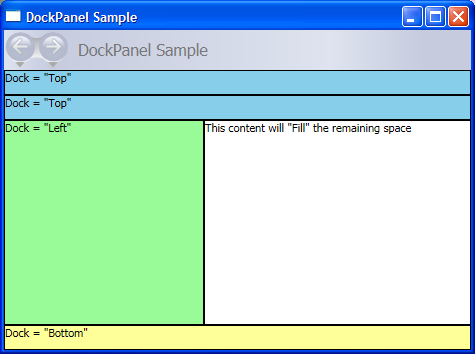

Практическое руководство. Разделение пространства с помощью элемента DockPanel
В следующем примере создается простой UI framework с помощью DockPanel элемент. DockPanel Разделяет доступное пространство между его дочерних элементов.
Пример
В этом примере используется Dock свойство, которое является присоединенным свойством, чтобы прикрепить два идентичных Border элементы Top разделенного пространства. Третий Border прикреплен данный элемент Left, шириной 200 пикселей. Четвертый Border закреплены Bottom экрана. Последний Border элемент автоматически заполняет оставшееся пространство.
// Create the application's main window
mainWindow = new Window ();
mainWindow.Title = "DockPanel Sample";
// Create the DockPanel
DockPanel myDockPanel = new DockPanel();
myDockPanel.LastChildFill = true;
// Define the child content
Border myBorder1 = new Border();
myBorder1.Height = 25;
myBorder1.Background = Brushes.SkyBlue;
myBorder1.BorderBrush = Brushes.Black;
myBorder1.BorderThickness = new Thickness(1);
DockPanel.SetDock(myBorder1, Dock.Top);
TextBlock myTextBlock1 = new TextBlock();
myTextBlock1.Foreground = Brushes.Black;
myTextBlock1.Text = "Dock = Top";
myBorder1.Child = myTextBlock1;
Border myBorder2 = new Border();
myBorder2.Height = 25;
myBorder2.Background = Brushes.SkyBlue;
myBorder2.BorderBrush = Brushes.Black;
myBorder2.BorderThickness = new Thickness(1);
DockPanel.SetDock(myBorder2, Dock.Top);
TextBlock myTextBlock2 = new TextBlock();
myTextBlock2.Foreground = Brushes.Black;
myTextBlock2.Text = "Dock = Top";
myBorder2.Child = myTextBlock2;
Border myBorder3 = new Border();
myBorder3.Height = 25;
myBorder3.Background = Brushes.LemonChiffon;
myBorder3.BorderBrush = Brushes.Black;
myBorder3.BorderThickness = new Thickness(1);
DockPanel.SetDock(myBorder3, Dock.Bottom);
TextBlock myTextBlock3 = new TextBlock();
myTextBlock3.Foreground = Brushes.Black;
myTextBlock3.Text = "Dock = Bottom";
myBorder3.Child = myTextBlock3;
Border myBorder4 = new Border();
myBorder4.Width = 200;
myBorder4.Background = Brushes.PaleGreen;
myBorder4.BorderBrush = Brushes.Black;
myBorder4.BorderThickness = new Thickness(1);
DockPanel.SetDock(myBorder4, Dock.Left);
TextBlock myTextBlock4 = new TextBlock();
myTextBlock4.Foreground = Brushes.Black;
myTextBlock4.Text = "Dock = Left";
myBorder4.Child = myTextBlock4;
Border myBorder5 = new Border();
myBorder5.Background = Brushes.White;
myBorder5.BorderBrush = Brushes.Black;
myBorder5.BorderThickness = new Thickness(1);
TextBlock myTextBlock5 = new TextBlock();
myTextBlock5.Foreground = Brushes.Black;
myTextBlock5.Text = "This content will Fill the remaining space";
myBorder5.Child = myTextBlock5;
// Add child elements to the DockPanel Children collection
myDockPanel.Children.Add(myBorder1);
myDockPanel.Children.Add(myBorder2);
myDockPanel.Children.Add(myBorder3);
myDockPanel.Children.Add(myBorder4);
myDockPanel.Children.Add(myBorder5);
// Add the parent Canvas as the Content of the Window Object
mainWindow.Content = myDockPanel;
mainWindow.Show ();
<Page xmlns="http://schemas.microsoft.com/winfx/2006/xaml/presentation" WindowTitle="DockPanel Sample">
<DockPanel LastChildFill="True">
<Border Height="25" Background="SkyBlue" BorderBrush="Black" BorderThickness="1" DockPanel.Dock="Top">
<TextBlock Foreground="Black">Dock = "Top"</TextBlock>
</Border>
<Border Height="25" Background="SkyBlue" BorderBrush="Black" BorderThickness="1" DockPanel.Dock="Top">
<TextBlock Foreground="Black">Dock = "Top"</TextBlock>
</Border>
<Border Height="25" Background="LemonChiffon" BorderBrush="Black" BorderThickness="1" DockPanel.Dock="Bottom">
<TextBlock Foreground="Black">Dock = "Bottom"</TextBlock>
</Border>
<Border Width="200" Background="PaleGreen" BorderBrush="Black" BorderThickness="1" DockPanel.Dock="Left">
<TextBlock Foreground="Black">Dock = "Left"</TextBlock>
</Border>
<Border Background="White" BorderBrush="Black" BorderThickness="1">
<TextBlock Foreground="Black">This content will "Fill" the remaining space</TextBlock>
</Border>
</DockPanel>
</Page>
Note
По умолчанию последний дочерний узел данного DockPanel элемент заполняет оставшееся незанятое пространство. Если в этом нет необходимости, следует задать LastChildFill="False".
Скомпилированное приложение возвращает новый пользовательский интерфейс, выглядящий следующим образом.
